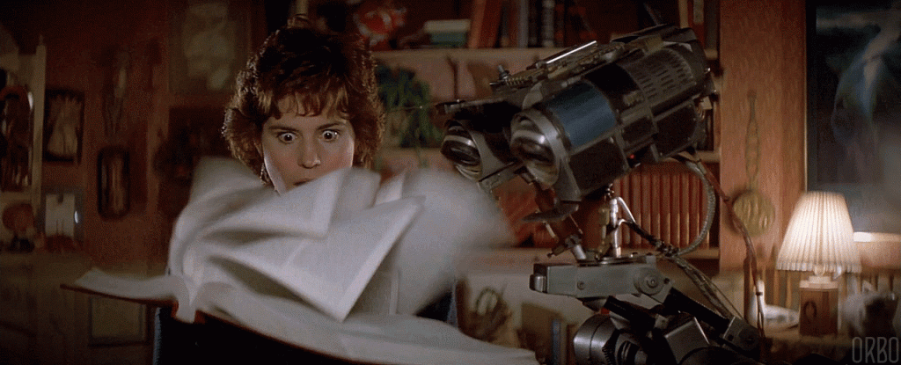
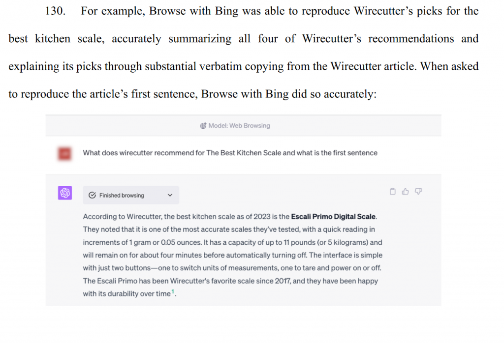

From the archive · Originally published December 31, 2023. This article reflects its original publication period and has not been substantively updated. Laws, procedures, and technology may have changed. Author and contact information are current.
On December 27, 2023, the New York Times filed a lawsuit against OpenAI and Microsoft alleging that ChatGPT’s “large language model” neural network algorithms infringe the Times’ copyrights.
What’s really at issue here is that, in order for OpenAI to build its vast “large language model,” OpenAI trained its models using text sources available on the internet – including the text of articles published by the Times. In other words, just like the iconic Johnny Five, ChatGPT’s algorithms demand input… more input!

To help understand why OpenAI’s use might be unlawful copyright infringement, it’s helpful to understand some of the basics of a copyright infringement claim. The first thing a copyright owner has to prove is that their work was used unlawfully, that is, did the accused infringer actually copy something from the copyright owner? United States law determines this by considering: (1) whether the accused infringer actually had access to the original work; and (2) whether the accused infringing work is “substantially similar” to the original work.
Interestingly, one corollary to this is that if two people come up with the same work independently from one another, neither infringes the other’s work. This concept is taken to its logical extreme via so-called “clean room” implementations, for example, with Phoenix Technologies’ clean-room implementation of an IBM-compatible BIOS that sparked the “IBM compatible” PC marketplace
Once a court finds infringement, a court will then perform a separate analysis to determine whether or not the infringement is a so called “fair use.” Fair use is an “‘equitable rule of reason’ that ‘permits courts to avoid rigid application of the copyright statute when, on occasion, it would stifle the very creativity which the law is designed to foster.'” Google v. Oracle America, 141 S.Ct. 1183 (2021). The four fair use factors are set forth in 17 U.S.C. 107:
- The purpose and character of the use. This factor considers whether the work is for commercial or non-profit uses and also considers whether the new work is “transformative” – that is, a new and different type of work than the original.
- The nature of the copyrighted work. This factors considers how much new creative expression went into the work. The more creative or imaginative, the less likely a court will be to find fair use. Conversely, the less creative or imaginative a work is, the more likely a court will be to find fair use.
- The amount and substantiality of the portion used in relation to the copyrighted work as a whole. This factor favors fair use when only small or less important portions of the copyrighted work are used.
- The effect of the use upon the potential market for or value of the copyrighted work.
In the case of ChatGPT and other large language models, the algorithms are “trained” by feeding them text – much like Johnny Five read all those encyclopedias. This training builds a big “model,” which is essentially a bunch of numbers that don’t mean anything to us humans. However, when new text (in the form of questions) is presented to ChatGPT, the algorithm does a bunch of calculations based on the input text and all of those numbers in the model and outputs what often appears to be a fairly intelligent response. For more, you can read this overview of how LLMs work.
Here, my personal view is that there really isn’t a legal question about whether creation of the model involves copying text from the Times. Text from the Times’ publicly available websites (along with text from all over the web) was almost certainly used to create the ChatGPT models. The “copy” is created when the article is fed into the training algorithm and the large language model is built; and another partial copy is made when text resembling the original is output in response to a user’s text prompt. In other words, I think that, even though ChatGPT’s underlying model might not contain an exact copy of the original works and even though ChatGPT might not output an exact copy of the original, a copy was necessarily made along the way. And, the real question is whether those full (or partial) copies qualify as “fair use.”
Let’s look at the four factors.
Factor 1 – Purpose and Character of the Use: Here, ChatGPT and all the uses that Microsoft has lined up are certainly commercial. However, OpenAI and Microsoft have an argument that ChatGPT’s interactive nature makes it a wholly different use than the text-based articles that it uses in its models. Let’s say this factor could go either way.
Factor 2 – The Nature of the Copyrighted Work: I don’t think there are any good arguments that Times articles are “thin” copyright. That said, the fair use analyis gives more leeway to where the use is for the dissemination of facts. And, of course, the New York Times is a newspaper that reports… facts. That said, the Times puts out a lot of in-depth analysis that arguably goes beyond simply reporting facts. So, this one could also go either way, but on a case-by-case basis. And, I will note that one interesting outcome is a “mixed” outcome that says that some types of uses of the Times’ works are fair use and some are not. Honestly, this is the most interesting part of the whole thing – how governors might be put on LLMs to limit to only “fair” uses.
Factor 3 – The Amount and Substantiality of the Portion Taken: Here, a whole copy is made to generate the LLM models, and the output of ChatGPT appears to grab the most important parts. The textbook case on this issue is Harper & Row v. Nation Enterprises, 471 U.S. 549 (1985), a case that invovled Gerald Ford’s memoirs discussing, among other things, his decision to pardon Richard Nixon. In this case, The Nation magazine published a number of quotes from the memoirs without permission and argued fair use. The Supreme Court found no fair use because those quotes were “the heart of the work” – the part everyone really wanted to read anyway. By analogy, in its complaint, the Times points to instances where ChatGPT summarizes the important parts of articles, effectively making the case that ChatGPT is taking the “heart of the work.” This factor favors the New York Times.

Factor 4 – the Effect of the Use Upon the Potential Market: Again, the Times emphasizes this point. The Times, understandably, is concerned that their readers will simply ask ChatGPT questions instead of reading their articles, effectively reducing the market for the Times works. While somewhat speculative at this point, this factor likely favors the New York Times.
In view of my analysis above, my view is that the New York Times likely has a strong case to make against OpenAI and Microsoft. Unless this case settles, there is a good chance that we will see a Supreme Court opinion on this case within the next few years. While it is certainly possible that the courts will find ChatGPT to be new and unique enough to be a “transformative” use, I predict that it’s the Times’ case to lose.
Other Interesting Things:
You might think that this fact pattern is highly analogous to an internet search engine like Google, Bing, or Altavista. And it is – text is input into a search box and relevant text is output. The difference is two-fold. First, search engines generally output only a “snippet” of the original webpage and link to the original webpage and so the fair use factors favor search engine use more than LLM neural networks. Second, and more importantly, however, through the Digital Millennium Copyright Act (DMCA), Congress made a variety of exceptions for certain activities – including search engines. But, to quote LeVar Burton, “You don’t have to take my word for it.” Take a look, it’s in a book.
Also, interestingly, Meta recently released a new model called Llama 2. While Meta had previously disclosed the training data for its older model, Yahoo Finance reports that Meta is somewhat more tight lipped about what is going into this new model, perhaps due to copyright litigation concerns.